import numpy as np
import pandas as pd
import dabest
print("We're using DABEST v{}".format(dabest.__version__))We're using DABEST v2023.02.14Changing the y-axes labels.
import numpy as np
import pandas as pd
import dabest
print("We're using DABEST v{}".format(dabest.__version__))We're using DABEST v2023.02.14from scipy.stats import norm # Used in generation of populations.
np.random.seed(9999) # Fix the seed so the results are replicable.
# pop_size = 10000 # Size of each population.
Ns = 20 # The number of samples taken from each population
# Create samples
c1 = norm.rvs(loc=3, scale=0.4, size=Ns)
c2 = norm.rvs(loc=3.5, scale=0.75, size=Ns)
c3 = norm.rvs(loc=3.25, scale=0.4, size=Ns)
t1 = norm.rvs(loc=3.5, scale=0.5, size=Ns)
t2 = norm.rvs(loc=2.5, scale=0.6, size=Ns)
t3 = norm.rvs(loc=3, scale=0.75, size=Ns)
t4 = norm.rvs(loc=3.5, scale=0.75, size=Ns)
t5 = norm.rvs(loc=3.25, scale=0.4, size=Ns)
t6 = norm.rvs(loc=3.25, scale=0.4, size=Ns)
# Add a `gender` column for coloring the data.
females = np.repeat('Female', Ns/2).tolist()
males = np.repeat('Male', Ns/2).tolist()
gender = females + males
# Add an `id` column for paired data plotting.
id_col = pd.Series(range(1, Ns+1))
# Combine samples and gender into a DataFrame.
df = pd.DataFrame({'Control 1' : c1, 'Test 1' : t1,
'Control 2' : c2, 'Test 2' : t2,
'Control 3' : c3, 'Test 3' : t3,
'Test 4' : t4, 'Test 5' : t5, 'Test 6' : t6,
'Gender' : gender, 'ID' : id_col
})two_groups_unpaired = dabest.load(df, idx=("Control 1", "Test 1"), resamples=5000)Changing the y-axes labels.
two_groups_unpaired.mean_diff.plot(swarm_label="This is my\nrawdata",
contrast_label="The bootstrap\ndistribtions!");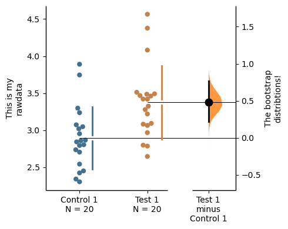
Color the rawdata according to another column in the dataframe.
multi_2group = dabest.load(df, idx=(("Control 1", "Test 1",),
("Control 2", "Test 2")
))
multi_2group.mean_diff.plot(color_col="Gender");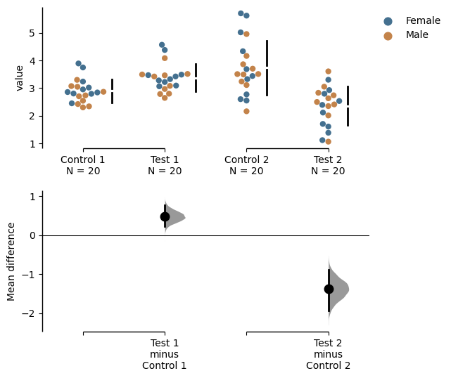
two_groups_paired_baseline = dabest.load(df, idx=("Control 1", "Test 1"),
paired="baseline", id_col="ID")
two_groups_paired_baseline.mean_diff.plot(color_col="Gender");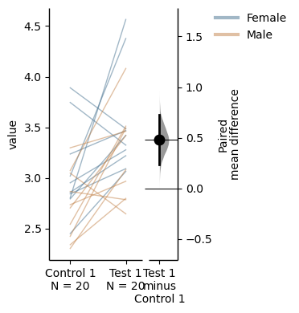
Changing the palette used with custom_palette. Any valid matplotlib or seaborn color palette is accepted.
multi_2group.mean_diff.plot(color_col="Gender", custom_palette="Dark2");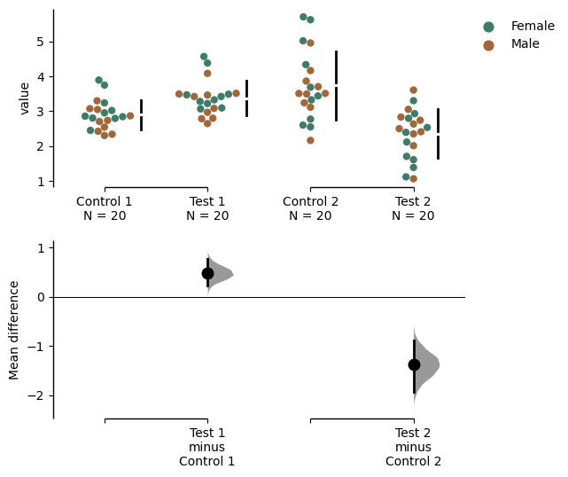
multi_2group.mean_diff.plot(custom_palette="Paired");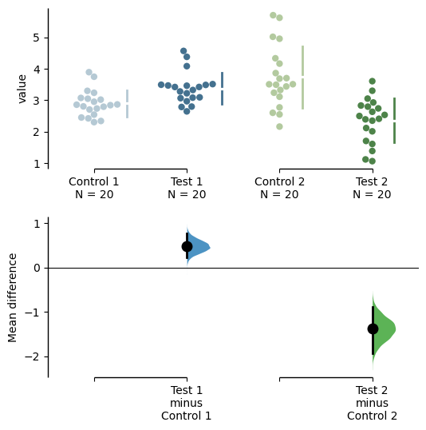
You can also create your own color palette. Create a dictionary where the keys are group names, and the values are valid matplotlib colors.
You can specify matplotlib colors in a variety of ways. Here, I demonstrate using named colors, hex strings (commonly used on the web), and RGB tuples.
my_color_palette = {"Control 1" : "blue",
"Test 1" : "purple",
"Control 2" : "#cb4b16", # This is a hex string.
"Test 2" : (0., 0.7, 0.2) # This is a RGB tuple.
}
multi_2group.mean_diff.plot(custom_palette=my_color_palette);
By default, dabest.plot() will desaturate the color of the dots in the swarmplot by 50%. This draws attention to the effect size bootstrap curves.
You can alter the default values with the swarm_desat and halfviolin_desat keywords.
multi_2group.mean_diff.plot(custom_palette=my_color_palette,
swarm_desat=0.75,
halfviolin_desat=0.25);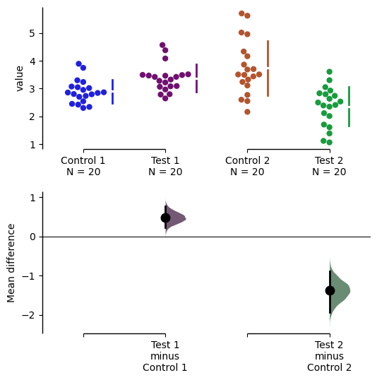
You can also change the sizes of the dots used in the rawdata swarmplot, and those used to indicate the effect sizes.
multi_2group.mean_diff.plot(raw_marker_size=3,
es_marker_size=12);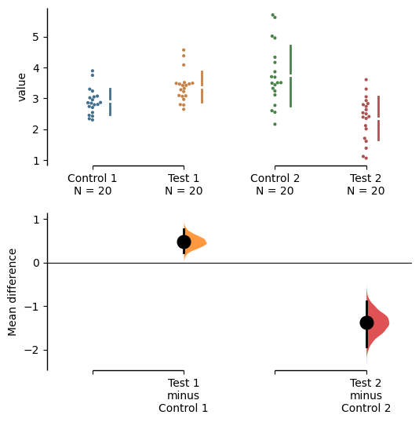
Changing the y-limits for the rawdata axes, and for the contrast axes.
multi_2group.mean_diff.plot(swarm_ylim=(0, 5),
contrast_ylim=(-2, 2));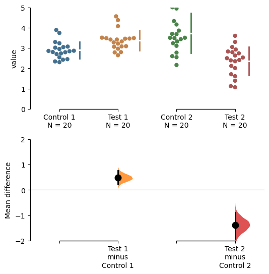
If your effect size is qualitatively inverted (ie. a smaller value is a better outcome), you can simply invert the tuple passed to contrast_ylim.
multi_2group.mean_diff.plot(contrast_ylim=(2, -2),
contrast_label="More negative is better!");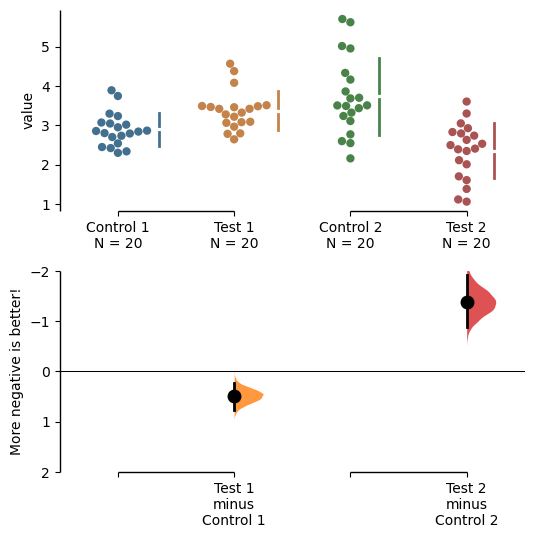
The contrast axes share the same y-limits as that of the delta - delta plot and thus the y axis of the delta - delta plot changes as well.
np.random.seed(9999) # Fix the seed so the results are replicable.
# Create samples
N = 20
y = norm.rvs(loc=3, scale=0.4, size=N*4)
y[N:2*N] = y[N:2*N]+1
y[2*N:3*N] = y[2*N:3*N]-0.5
# Add a `Treatment` column
t1 = np.repeat('Placebo', N*2).tolist()
t2 = np.repeat('Drug', N*2).tolist()
treatment = t1 + t2
# Add a `Rep` column as the first variable for the 2 replicates of experiments done
rep = []
for i in range(N*2):
rep.append('Rep1')
rep.append('Rep2')
# Add a `Genotype` column as the second variable
wt = np.repeat('W', N).tolist()
mt = np.repeat('M', N).tolist()
wt2 = np.repeat('W', N).tolist()
mt2 = np.repeat('M', N).tolist()
genotype = wt + mt + wt2 + mt2
# Add an `id` column for paired data plotting.
id = list(range(0, N*2))
id_col = id + id
# Combine all columns into a DataFrame.
df_delta2 = pd.DataFrame({'ID' : id_col,
'Rep' : rep,
'Genotype' : genotype,
'Treatment': treatment,
'Y' : y
})
paired_delta2 = dabest.load(data = df_delta2,
paired = "baseline", id_col="ID",
x = ["Treatment", "Rep"], y = "Y",
delta2 = True, experiment = "Genotype")
paired_delta2.mean_diff.plot(contrast_ylim=(3, -3),
contrast_label="More negative is better!");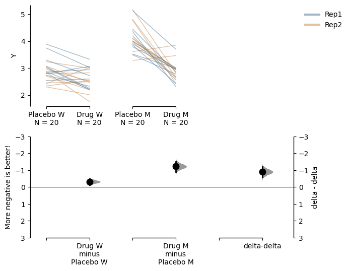
You can also change the y-limits and y-label for the delta - delta plot.
paired_delta2.mean_diff.plot(delta2_ylim=(3, -3),
delta2_label="More negative is better!");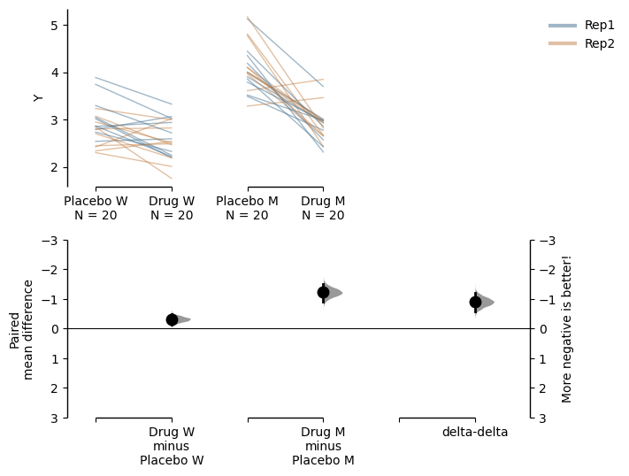
You can add minor ticks and also change the tick frequency by accessing the axes directly.
Each estimation plot produced by dabest has 2 axes. The first one contains the rawdata swarmplot; the second one contains the bootstrap effect size differences.
import matplotlib.ticker as Ticker
f = two_groups_unpaired.mean_diff.plot()
rawswarm_axes = f.axes[0]
contrast_axes = f.axes[1]
rawswarm_axes.yaxis.set_major_locator(Ticker.MultipleLocator(1))
rawswarm_axes.yaxis.set_minor_locator(Ticker.MultipleLocator(0.5))
contrast_axes.yaxis.set_major_locator(Ticker.MultipleLocator(0.5))
contrast_axes.yaxis.set_minor_locator(Ticker.MultipleLocator(0.25))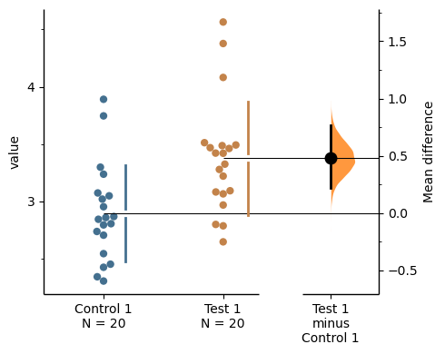
f = multi_2group.mean_diff.plot(swarm_ylim=(0,6),
contrast_ylim=(-3, 1))
rawswarm_axes = f.axes[0]
contrast_axes = f.axes[1]
rawswarm_axes.yaxis.set_major_locator(Ticker.MultipleLocator(2))
rawswarm_axes.yaxis.set_minor_locator(Ticker.MultipleLocator(1))
contrast_axes.yaxis.set_major_locator(Ticker.MultipleLocator(0.5))
contrast_axes.yaxis.set_minor_locator(Ticker.MultipleLocator(0.25))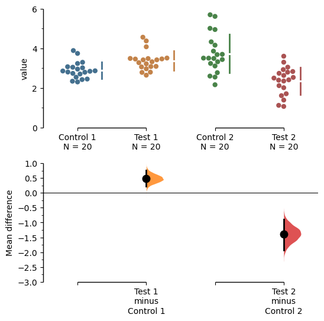
For mini-meta plots, you can hide the weighted avergae plot by setting show_mini_meta=False in the plot() function.
np.random.seed(9999) # Fix the seed so the results are replicable.
# pop_size = 10000 # Size of each population.
Ns = 20 # The number of samples taken from each population
# Create samples
c1 = norm.rvs(loc=3, scale=0.4, size=Ns)
c2 = norm.rvs(loc=3.5, scale=0.75, size=Ns)
c3 = norm.rvs(loc=3.25, scale=0.4, size=Ns)
t1 = norm.rvs(loc=3.5, scale=0.5, size=Ns)
t2 = norm.rvs(loc=2.5, scale=0.6, size=Ns)
t3 = norm.rvs(loc=3, scale=0.75, size=Ns)
# Add a `gender` column for coloring the data.
females = np.repeat('Female', Ns/2).tolist()
males = np.repeat('Male', Ns/2).tolist()
gender = females + males
# Add an `id` column for paired data plotting.
id_col = pd.Series(range(1, Ns+1))
# Combine samples and gender into a DataFrame.
df = pd.DataFrame({'Control 1' : c1, 'Test 1' : t1,
'Control 2' : c2, 'Test 2' : t2,
'Control 3' : c3, 'Test 3' : t3,
'Gender' : gender, 'ID' : id_col
})
mini_meta_paired = dabest.load(df, idx=(("Control 1", "Test 1"), ("Control 2", "Test 2"), ("Control 3", "Test 3")), mini_meta=True, id_col="ID", paired="baseline")
mini_meta_paired.mean_diff.plot(show_mini_meta=False);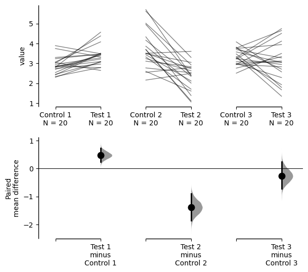
Similarly, you can also hide the delta-delta plot by setting show_delta2=False in the plot() function.
paired_delta2.mean_diff.plot(show_delta2=False);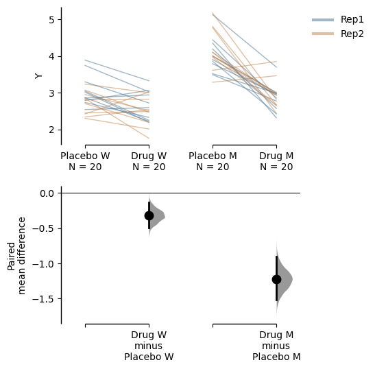
Implemented in v0.2.6 by Adam Nekimken.
dabest.plot has an ax keyword that accepts any Matplotlib Axes. The entire estimation plot will be created in the specified Axes.
two_groups_paired_baseline = dabest.load(df, idx=("Control 1", "Test 1"),
paired="baseline", id_col="ID")
multi_2group_paired = dabest.load(df,
idx=(("Control 1", "Test 1"),
("Control 2", "Test 2")),
paired="baseline", id_col="ID")from matplotlib import pyplot as plt
f, axx = plt.subplots(nrows=2, ncols=2,
figsize=(15, 15),
gridspec_kw={'wspace': 0.25} # ensure proper width-wise spacing.
)
two_groups_unpaired.mean_diff.plot(ax=axx.flat[0]);
two_groups_paired_baseline.mean_diff.plot(ax=axx.flat[1]);
multi_2group.mean_diff.plot(ax=axx.flat[2]);
multi_2group_paired.mean_diff.plot(ax=axx.flat[3]);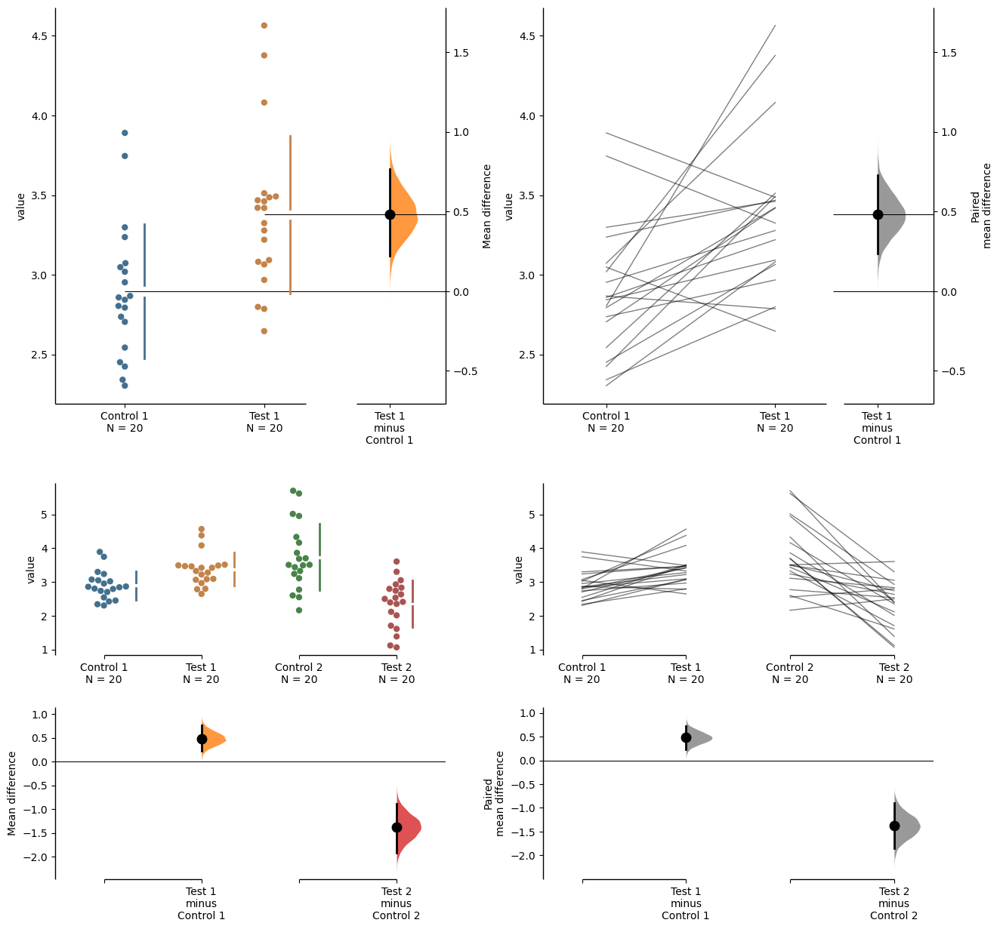
In this case, to access the individual rawdata axes, use name_of_axes to manipulate the rawdata swarmplot axes, and name_of_axes.contrast_axes to gain access to the effect size axes.
topleft_axes = axx.flat[0]
topleft_axes.set_ylabel("New y-axis label for rawdata")
topleft_axes.contrast_axes.set_ylabel("New y-axis label for effect size")Text(638.7222222222223, 0.5, 'New y-axis label for effect size')